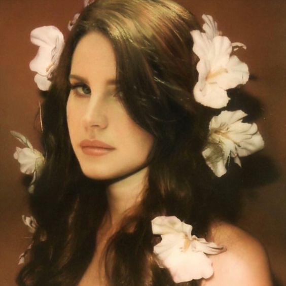
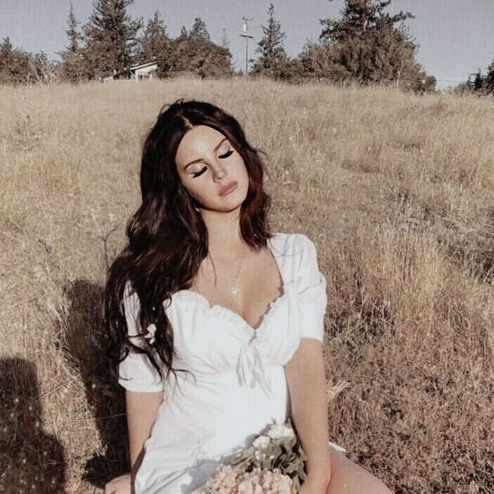

✨ Summer time sadness
From lana del rey's second studio album, Born to Die 2012.

✨ Say yes to heaven
She wrote the track with its producer Rick Nowels in 2012 for her third album.
✨ West Coast
It is a melancholy love song about a woman torn between love and ambition.

✨ Young and beatiful
This song was used for the soundtrack to the drama film The Great Gatsby..